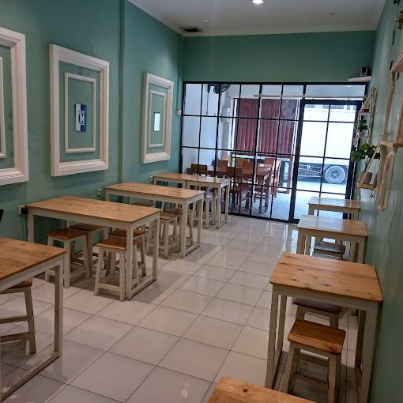

Froralcafe · Bintaro
Lebih dari Sekadar Tempat Menikmati Kopi.
Tempat hangat untuk ngopi, melepas penat, dan berkumpul bersama orang-orang terdekat.
Tentang Kami
Lebih dari Sekadar Tempat Menikmati Kopi.
Kami hadir sebagai tempat untuk menikmati kopi, melepas penat, dan menghabiskan waktu bersama orang-orang terdekat. Dengan suasana yang hangat, pelayanan ramah, serta pilihan menu berkualitas, kami ingin menjadikan setiap kunjungan sebagai pengalaman yang berkesan.

Fasilitas
Tempat Nyaman untuk Setiap Aktivitas.
Baik untuk bekerja, belajar, berkumpul bersama teman, maupun sekadar menikmati waktu sendiri. Kami menyediakan suasana yang mendukung kenyamanan setiap pengunjung.
Indoor & Outdoor
Area indoor dan outdoor.
Wi-Fi Gratis
Internet cepat untuk kerja & belajar.
Area Duduk Nyaman
Tempat duduk yang nyaman untuk bersantai.
Stopkontak
Untuk kebutuhan perangkat elektronik.


Hubungi Kami
Kami Senang Menyambut Kehadiranmu!
Punya pertanyaan atau ingin mengetahui informasi lebih lanjut? Jangan ragu untuk menghubungi kami melalui kontak yang tersedia. Kami siap membantu memberikan pengalaman terbaik untukmu.
- Alamat: Jl. Mawar 2 No. 6F, Bintaro, Pesanggrahan, Jakarta Selatan 12330
- Telepon: 0812 9101 829
- Instagram: @babatricoffeeeatery
- Jam Operasional: 09.30–21.00 WIB